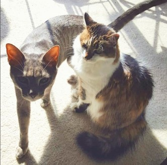

Heather Smith
full stack developerHeather Smith is a developer currently enrolled in Georgia Tech's Full Stack Flex Bootcamp. Her skills include:
- JavaScript
- jQuery
- Node
- Postman
- Express
- Handlebars
- HTML
- CSS
- Bootstrap
- MongoDB
- mySQL
- Sequelize
She also has a strong understanding of design, color theory, and composition.
Before the pandemic, Heather was working as an office administrator for a small label printing company. As the pandemic spread, she left her job and started self-guided studies with Codecademy at home. After learning through the summer and fall, she had built a foundation and it was time to move forward. The bootcamp has been an enormous challenge, but she is on track to graduate at the end of May, 2021.

When she isn't coding, Heather likes gardening, cooking, thrift shopping, and video games. She also loves to fossil hunt, and is a member of the Georgia Mineral Society. Currently, she lives in Sandy Springs, Georgia with her husband and two cats.